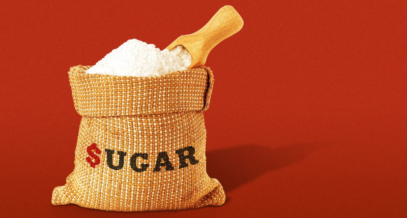

Zucchero, alimentazione e salute
Published Sep 24, 2024 - origin LinkedIn article
Questo articolo è il prodotto di diversi post pubblicati in precedenza su LinkedIn.
Introduzione
Questo articolo non ha la pretesa di avere un valore scientifico ma lo scoposviluppare un ragionamento critico in cui si supera il complottismo che poi nonè altro che il risultato di certe posizioni irrazionali che non trovano ascoltoe quindi pubblicazioni divulgative in linea con le loro aspettativa (o con illoro istinto che gli suggerisce che qualcosa non sta andando nel verso giustoe/o non ce la raccontano giusta). D'altronde è difficile avere fiducianell'informazione mainstream considerando quante volte ha fallito di superare ilbasilare test di un confronto critico e oggettivo.
Il ragionamento critico - anche detto opera di confutazione - non è estraneo allascienza, anzi ne è un elemento fondamentale (cfr. Karl Popper). Esso, prima ditutto, ci garantisce che "
fidati sono uno scienziato" non esiste proprio.
Ma l'alternativa è di studiare, laurearsi, imparare le cose come ci vengono dettee poi svilupparle ulteriormente. Talvolta, ci porta a mettere in discussionequello che è stato scritto da altri oppure stato dato per scontato.
Generalmente questo capita quando si trova un errore alle fondamento della teoriache è in voga al momento ma come tutte le teorie scientifica è soggetta a possibilimiglioramenti, interpretazioni e confutazione.
Uno di questi errori è evidenziato qui sotto, e anche se sembra banale farloemergere, non è affatto così. Perché perché diventi evidente occorre avere presenteprocessi che accadono in ambienti assai diversi e lontani dalle aule di medicina:le cantine. Un errore comprensibile perché in assenza di una cognizione del perchédovrebbe essere diverso, si ritiene che non vi sia differenza (ipotesi zero) perun altro principio scientifico in cui ogni elemento di ulteriore complicazione inassenza di una ragione fattuale e concreta, deve essere evitato.
Un altra nozione importante per evidenziare questo errore e trovare una spiegazionealternativa, una volta negata l'affermazione errata, è la comprensione delledinamiche dei fenomeni a crescita esponenziale. Anche questa una nozionegeneralmente assai distante alle aule di medicina e quando trattata, solosuperficialmente. A meno di non aver deciso di specializzarsi in epidemiologia.In tal caso subentrano anche gli studi di matematica e statistica applicata ad essanecessaria. Ma in quel caso, il cancro non rientra in quell'ambito piuttosto batterie virus.
Quindi un errore concettuale anche importante persiste per relativamente per lungotempo tanto più quell'errore per essere smascherato richiede la conoscenza dinozioni che si trovano in ambiti molto diverso e affatto affini alla materia in oggetto.In letteratura questo è detto vizio di eccessiva verticalizzazione oppure bias davisione a fuoco concentrato o anche visione tunnel. Coloro che camminano persentieri molto battuti è raro quando impossibile che scoprano delle novità.
Sappiamo da molto tempo che con il cancro molte cose non funzionano come nelle cellule c.d. normali e pare ragionevole dire che fra le cose che non abbiamo compreso appieno è il ruolo che gioca il canale di Warburg nel produrre ATP in modo
più veloce ma meno efficiente in e delle implicazioni riguardo a velocità vs efficienza in termini di relativa abbondanza o scarsità di risorse (disponibilità e contesa delle stesse).
Il metabolismo alterato del glucosio è un caratteristica unica del cancro.
Risale ai primi del Novecento una scoperta fondamentale di Otto Warburg, in Germania, che gli valse il Premio Nobel per la Medicina nel 1931. Si tratta della cosiddetta «glicolisi aerobica» delle cellule tumorali: queste ultime infatti sono caratterizzate da un particolare metabolismo, ovvero il complesso di reazioni chimiche che trasformano proteine, zuccheri e grassi, fornendo energia per le nostre cellule.
Warburg individuò la velocità di metabolizzare il glucosio come differenza fondamentale tra le cellule sane e quelle cancerose. Questo fenomeno, noto come «effetto Warburg», è stato considerato da un certo punto in avanti come una mera curiosità nota ai patologi. [Questa scoperta è stata per molti anni recepita con sufficienza]. In realtà, negli ultimi anni se ne è riscoperta la fondamentale importanza.
Fonte:
scienzainrete.it/files/effetto_warburg_contro_il_cancro.pdf
L'errore concettuale sulla competizione fra cancro e sistema immunitario.
Oggi è appurato che l’effetto Warburg [...] aiuta le cellule tumorali a crescere, [...]. Un’ipotesi è che la glicolisi, benché meno redditizia da un punto di vista energetico, sia un processo molto più rapido rispetto alla completa ossidazione del glucosio: le cellule tumorali potrebbero prediligere la velocità alla resa, una strategia che le renderebbe più competitive in caso di risorse limitate o condivise.
Fonte:
biopills.net/effetto-warburg
Del testo sopra riportato, questa locuzione "
più competitive in caso di risorse limitate o condivise" è un
ERRORE perché in effetti è l'opposto. Infatti, prediligere la velocità alla resa, è un'ottima strategia di crescita
SOLO quando le risorse sono abbondanti.
Avendo una sola tanica di benzina per attraversare un deserto, si sceglierà una piccola Jeep leggera. Se invece si dispone di carburante a in grande quantità, allora si può scegliere un super Hammer con condizionatore a manetta.
Le cellule tumorali NON fanno alcun ragionamento razionale, scelgono sempre l'Hammer, ma quando il carburante scarseggia muoiono cercando di attraversare il deserto aka sistema immunitario che gioca il ruolo di antagonista, come il deserto da attraversare.
Se invece ci riescono, crescono indefinitivamente fino a diventare metastasi ovvero la loro curva esponenziale riesce a varcare la soglia critica. Come nelle reazioni di fissione nucleare che oltre una certa soglia diventa esplosiva.
Lieviti e mitocondri in soluzioni zuccherine
I lieviti sono organismi unicellulari eucarioti [...] cellule fungine. In condizioni aerobiche e con bassissimi tenori di glucosio il lievito infatti respira: la respirazione gli consente di produrre un alto tenore di ATP, ovvero circa 36 moli di ATP per ogni mole di glucosio.
Ma non appena il lievito si trova in soluzioni lievemente zuccherine (8 g/L secondo il dottor Herbert G. Crabtree) i mitocondri vengono inibiti. Che significa ciò? I mitocondri non scompaiono dal lievito, semplicemente non riescono a sintetizzare le proteine, ovvero gli enzimi che producono l’ATP nella catena di ossidazione del NADH,H+ e del FADH2, ovvero la fosforilazione ossidativa.
Fonte:
ramonpersello.com/news/lieviti-e-mitocondri-in-soluzioni-zuccherine
Un po' di storia dell'ipotesi di warburg
L'ipotesi di Warburg, premio Nobel per la medicina nel 1931 - che venne formulata formulata nel 1924 ma pubblicata nel 1966 - sostiene che i mitocondri delle cellule cancerogene utilizzerebbero un diverso metabolismo per estrarre energia dallo glucosio, fermentandolo invece di ossidarlo.
Fonte:
it.wikipedia.org/wiki/Ipotesi_di_Warburg
Quindi comportandosi in maniera simile a quello che farebbero i mitocondri del lievito durante la fermentazione anerobica. Ma nella condizione fermentativa cosa accade al ciclo di Krebs?
L’effetto principale che il glucosio esplica sulla repressione dell’attività mitocondriale (effetto Crabtree) è certamente quella di inibire completamente la trascrizione del DNA mitocondriale, impedendo la sintesi degli enzimi necessari alla fosforilazione ossidativa.
Per concludere [...] a causa dell’effetto Crabtree i mitocondri perdono la facoltà di sintetizzare amminoacidi, rendendo il processo completamente dipendente dall'azoto.
Fonte:
ramonpersello.com/news/lieviti-e-mitocondri-in-soluzioni-zuccherine
Quindi maggiore è la disponibilità di glucosio, maggiore sarà l'attitudine a sfruttare la fermentazione lattica invece della fosforilazione ossidativa e quindi ad accelerare la riproduzione delle cellule che sfruttano questo canale ATP, quindi le cellule del cancro, specificatamente.
Anche un leggero vantaggio porta alla capacità di superare l'ostacolo del sistema immunitario che svolgendo il suo ruolo provvederà a cercare di eliminare queste cellule quanto più velocemente e in maniera quanto più efficiente possibile e fortunatamente le cellule del cancro non sono efficienti, salvo quando c'è un eccesso di zucchero e ampia disponibilità di azoto che possa immediatamente utilizzato.
L'azoto è uno degli elementi principali dei fertilizzanti chimici che ovviamente si trova anche nei fertilizzanti di origine animale (letame) ma in questo caso così come nel caso di residui vegetali come parte del letame, si trova combinato in molecole piuttosto lunghe che quindi devono essere smontante, letteralmente, attraverso enzimi per poter rendere l'elemento azoto presente in esse immediatamente disponibile, ovvero in molecole più semplici.
Senza sorpresa l'aumento progressivo sia la quantità di zucchero che di uso di concimi chimici a basso costo - quindi di rapida sintesi chimica - coincidono con la fine della WW2.
Il ruolo dello zucchero nell'alimentazione
In particolare per quanto riguarda il consumo di zucchero, come additivo alimentare sia casalingo sia industriale, e l'effetto che ha sulla nostra dieta sia da un punto di vista nutrizionale, sia in termini di apporto calorico, è possibile valutarlo con questa semplice analisi, dallo stesso autore di questo articolo:
The sugar's role in our foods and lives (2024-09-22) su github/robang74
Dalla quale si evidenzia che in bambino che segue uno stile di vita sedentario tipico della vita metropolitana, che bevesse due lattine da 33cl di una soft-drink zuccherata al giorno, finirebbe per acquisire il 18% di calorie in più del necessario oppure, ma meno probabilmente, il 18% di nutrienti in meno. Sul breve periodo non è un grosso problema, come stile di vita - anche considerando che le soft-drink hanno il 10% di zucchero ma il ketchup per esempio ne ha il 22%, senza contare biscotti, brioche, caramella, chewing-gun, etc. - gli effetti sono inevitabili anche sul metabolismo basale se l'eccesso di zucchero si presenta in giovane età e perdura durante l'età della crescita.
Basta confrontare i ritmi di crescita dei neonati allattati soltanto al seno e quelli allattati soltanto con latte artificiale per non avere dubbi a riguardo. Eppure è accertato che un più rapido aumento di peso nei neonati sia necessariamente un fattore di più sana e maggiore robusta costituzione, anzi. Ma questo accade, non solo nell'essere umano, ma anche meglio animali da allevamento. Quelli ruspanti crescono meno velocemente in peso di quelli allevati solo con mangimi industriali e tenuti fermi in gabbia. Anche in padella la resa è diversa!
In letteratura
Studi statistici - ne ho letto uno in particolare - sull'impatto degli zuccheri nell'alimentazione nell'arco di una finestra temporale di tre anni che arriva a delle conclusioni bizzarre fra cui mancare persino di trovare le correlazioni fra fenomeni di cui sappiamo esistere una causa effetto come l'obesità. Poi si va a vedere la dieta placebo, ed era altrettanto calorica solo senza zucchero raffinato.
Invece sappiamo che il problema dell'eccesso di zuccheri nei cibi è prevalente nell'età della crescita. Si tratta di un evidenza che conosciamo da quando hanno inventato il latte in polvere per sostituire le balie.
Quindi, oltretutto è inutile andare a vedere gli effetti a 3 anni su adulti quando il problema metabolico basale si è creato nella fase della crescita e per correggerlo - anche bastassero 3 anni - occorre eliminare anche l'eccesso di calorie che l'eccesso di zucchero comporta.
Infine, l'abitudine al gusto dolce creata da un eccesso di zucchero che fornisce un eccesso di calorie è nient'altro che la trappola del tabagismo ma per i cibi. Motivo per il quale i cerotti alla nicotina non risolvono niente e le sigarette senza nicotina non si vendono.
Quindi possiamo affermare che l'errore trovato sia - nonostante la sua fondamentale importanza - comprensibile in un ambito in cui l'eccesso di specializzazione porta alla relativa lunga persistenza di determinate affermazioni.
Mentre è molto meno roseo il panorama quando invece si trovano molti articoli scientifici pubblicati su riviste che dovrebbero preventivamente esercitare una seria peer-review che mancano palesemente di essere state selezionate da una critica oggettiva.
Considerazioni
Appare evidente che la questione riguarda la disponibilità in eccesso, sia basale sia di picco glicemico, per favorire il cancro rispetto all'azione del sistema immunitario.
Ma allora perché accusiamo lo zucchero, e proprio con lo zucchero raffinato?
Perché la sua presenza ubiqua e in dosi elevate costituisce un serio problema o ostacolo ad una gestione di una dieta bilanciata e non eccessivamente calorica.
D'altronde il ruolo dello zucchero nei cibi è abbastanza evidente. Basti pensare che a settembre in Genova è possibile comprare per la stessa somma, 1kg di uva bianca oppure due lattine di Coca-Cola.
Due lattine di Coca-Cola, non faccio alcuna difficoltà a berle durante una lauta e molto calorica cena, anzi mi aiutano a digerirla. Mentre se mangio un chilo di uva, è probabile che salti la cena oppure completi con un'unità di cracker (25gr.) che è equivalente a mangiare, in termini di calorie, 50gr di pane bianco.
Guariamo allo zucchero come un intruso perché di fatto lo è ma anche perché per lo zucchero esistono i dolcificanti a zero calorie, quindi il problema non si dovrebbe nemmeno porre. Nemmeno per i produttori e zuccherifici, a patto ovviamente di accettare una transizione di mercato verso delle alternative allo zucchero dove fibre e dolcificanti sostituirebbero lo zucchero da tavola.
Ovviamente, il timore degli zuccherifici è quello di vedere crollare il loro mercato mentre chi coltiva zucchero può - da un anno all'altro - passare ad altre coltivazione, per gli zuccherifici non è così banale trovare un rimpiazzo equivalente allo zucchero.
La ragione è alquanto banale e si riassume in semplice domanda: perché dovrei mettere delle fibre nel mio caffè invece del solo dolcificante magari aumentato di un elemento neutro dal punto del sapore e dell'alimentazione giusto per dargli un volume accettabile da essere maneggiato?
Più ancora che il legislatore -
con le c.d. sugar tax da incrementare progressivamente - quello che può fare la differenza è il mercato. La scelta del consumatore costringe necessariamente gli zuccherifici a fare innovazione oppure a chiudere al contrarsi del mercato. Messi di fronte a questa concreta evenienza, saranno costretti ad innovare, altrimenti no.
Share alike
© 2024, Roberto A. Foglietta <roberto.foglietta@gmail.com>, CC BY-NC-ND 4.0